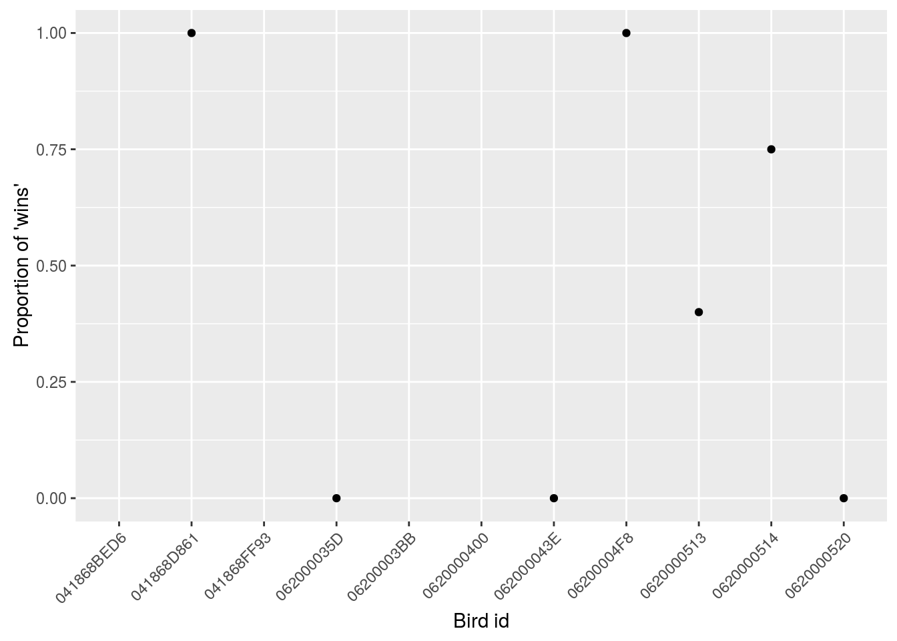

This is a quick tutorial to get you started with transforming and summarizing your data from raw read data to a variety of different data types which can be used to answer different questions.
Here we assume that you know how to load/import your data and that, if needed, you’ve cleaned up problematic bird_ids with the various housekeeping functions.
In all cases you’ll want to use the visits() function first, but after that it depends on what kinda of data you want to end up with.
Click on the function name below to skip directly to the function tutorial:
visits()This function is designed to turn ‘raw’ data into ‘visits’ data.
This is always the first function you should use. Raw read data contains an individual line of data for each read event made by the RFID reader.
For example, if the reader was set to record ids every ~3 seconds, an individual sitting on the feeder for 13 seconds would look something like this:
finches[5:9,]## bird_id time feeder_id species lon lat
## 5 06200004F8 2016-01-28 12:35:59 2200 House Finch -120.3612 50.66778
## 6 06200004F8 2016-01-28 12:36:02 2200 House Finch -120.3612 50.66778
## 7 06200004F8 2016-01-28 12:36:06 2200 House Finch -120.3612 50.66778
## 8 06200004F8 2016-01-28 12:36:09 2200 House Finch -120.3612 50.66778
## 9 06200004F8 2016-01-28 12:36:12 2200 House Finch -120.3612 50.66778The visits() function turns this raw data into something more practical:
v <- visits(finches, bw = 5)## Warning in mutate_impl(.data, dots): '.Random.seed' is not an integer
## vector but of type 'NULL', so ignoredhead(v)## # A tibble: 6 × 10
## bird_id date start end feeder_id
## <fctr> <date> <dttm> <dttm> <fctr>
## 1 041868D396 2016-01-29 2016-01-29 08:35:25 2016-01-29 08:35:26 2400
## 2 041868D396 2016-01-29 2016-01-29 11:21:23 2016-01-29 11:21:26 2100
## 3 041868D396 2016-01-29 2016-01-29 11:23:58 2016-01-29 11:24:21 2100
## 4 041868D396 2016-01-29 2016-01-29 13:05:34 2016-01-29 13:05:34 2100
## 5 041868D396 2016-01-29 2016-01-29 13:09:10 2016-01-29 13:09:10 2100
## 6 041868D396 2016-01-29 2016-01-29 13:14:21 2016-01-29 13:14:21 2100
## # ... with 5 more variables: bird_n <int>, feeder_n <int>, species <chr>,
## # lon <dbl>, lat <dbl>Note that the new data frame has the individuals sorted differently from our raw data frame. But we can look directly at that individual by pulling out it’s bird_id:
head(v[v$bird_id == "06200004F8",])## # A tibble: 6 × 10
## bird_id date start end feeder_id
## <fctr> <date> <dttm> <dttm> <fctr>
## 1 06200004F8 2016-01-28 2016-01-28 12:35:52 2016-01-28 12:35:52 2200
## 2 06200004F8 2016-01-28 2016-01-28 12:35:59 2016-01-28 12:36:12 2200
## 3 06200004F8 2016-01-28 2016-01-28 12:38:50 2016-01-28 12:38:50 2200
## 4 06200004F8 2016-01-28 2016-01-28 13:23:40 2016-01-28 13:23:40 2200
## 5 06200004F8 2016-01-28 2016-01-28 13:24:41 2016-01-28 13:24:45 2200
## 6 06200004F8 2016-01-28 2016-01-28 13:24:54 2016-01-28 13:24:54 2200
## # ... with 5 more variables: bird_n <int>, feeder_n <int>, species <chr>,
## # lon <dbl>, lat <dbl>Now we can see that the above 5 reads have been combined into one visit, starting at 2016-01-28 12:35:59 and ending at 2016-01-28 12:36:12.
Visits are defined by:
bw)We also know that in this data set there are 5 individual bird_ids (bird_n) and 4 individual feeder_ids (feeder_n).
These numbers could also have been obtained by hand:
length(unique(v$bird_id))## [1] 6length(unique(v$feeder_id))## [1] 4Depending on the interval between reads in your RFID reader, you may have to adjust the value of bw which specifies how many seconds between reads separates two visits. The default is 3 seconds, but, as in our example here, that is too low for our data.
Another thing to be aware of is the possibility of ‘impossible visits’. This may occur if the internal clocks on your RFIDs are not in sync. An impossible visit is when an individual bird is detected at two different feeders within 2 seconds (the default) of each other. Unless your feeders are REALLY close to each other, this is highly unlikely.
Because both missing values (NAs) and impossible visits likely indicate a greater, underlying problem, you have to specifically tell the function to ignore them (or omit them, in the case of NAs).
v <- visits(finches, allow_imp = TRUE, na_rm = TRUE)Visit data is the starting block of all other transformations, but you can also summarize and analyze visit data itself.
For example, if we want to create daily summaries of the number of visits made and feeders used per bird_id, we could use the ddply() function from the package plyr (or see the package dplyr for more advanced techniques).
First we’ll add a column called day to our visits data frame, v.
v$day <- as.Date(v$start)Next we’ll summarize.
Here we’ve told ddply to split the data frame v by bird_id, and then to create 4 new columns (n_feeders, n_visits, n_days, mean_visit_length). In each case, we have defined how we want ddply to fill these new columns.
## FIXIx
library(plyr)
s <- ddply(v, c("bird_id"), summarise,
n_feeders = length(unique(feeder_id)),
n_visits = length(start),
n_days = length(unique(day)),
mean_visit_length = mean(end - start))
sThe result is a data frame with one row for each bird_id, giving us information on how many feeders that bird has used (total), how visits (total), how many days (total) and what the average visit length was.
If we wanted to plot this data, the package ggplot2 is a great option:
## FIXXXXX
library(ggplot2)
ggplot(data = s, aes(x = bird_id, y = mean_visit_length)) +
theme(axis.text.x = element_text(angle = 45, hjust = 1)) + #rotate and shift id labels
geom_bar(stat = "identity") +
labs(x = "Bird ID", y = "Average visit length (s)")| Back to top |
disp()This function is designed to turn ‘visit’ data into ‘displacements’ data.
Displacements are events when one bird leaves the feeder and is replaced by another bird within a certain, defined, time span.
In theory, we assume this is due to the arrival of a more dominant bird. However, observations in the field to confirm this assumption are necessary. Once ground-truthed, these events might lead to information on relative dominance of different individuals (see dom() function).
It is important to ground-truth this assumption because, depending on species, displacements may not necessarily represent dominance. For example, in the case of black-capped chickadees, if the dominant male is using the feeder, the subsequent users of the feeder may actually arrive and depart in descending order of rank. In this case, apparent ‘displacements’ are not displacements at all.
In the meanwhile, however, displacements reflect a quick turnover by the users of the feeder.
This function returns a list with three different types of displacement information: displacements, summary, and interactions.
If there are no displacement events in your data set, the function will stop:
v <- visits(finches, bw = 5)
d <- disp(v)## Error in disp(v): There are no displacement events with a bw = 5, stopping nowWe could increase the bw value, which for displacements represents the maximum interval between the first bird leaving and the second bird arriving for the interaction to be considered a displacement:
v <- visits(finches, bw = 5)
d <- disp(v, bw = 10)## Error in disp(v, bw = 10): There are no displacement events with a bw = 10, stopping nowd <- disp(v, bw = 15)However, an interval of 15s is pretty long and probably doesn’t constitute a real displacement event.
So let’s look at some different data:
r <- dl_data(start = "2016-03-07", end = "2016-03-11")
v <- visits(r)
d <- disp(v)
class(d)## [1] "list"names(d)## [1] "displacements" "summaries" "interactions"class(d) shows us that d is a list and names(d) shows us that it contains 3 items. These can be accessed individually by using: d$displacements, d$summaries or d$interactions
Basic Displacements represent each individual event (d$displacements)
head(d$displacements)## # A tibble: 6 × 11
## bird_id date left arrived feeder_id
## <fctr> <date> <dttm> <dttm> <fctr>
## 1 0620000513 2016-03-07 2016-03-07 12:40:16 2016-03-07 12:40:20 2300
## 2 0620000514 2016-03-07 2016-03-07 12:40:16 2016-03-07 12:40:20 2300
## 3 0620000513 2016-03-07 2016-03-07 12:40:35 2016-03-07 12:40:39 2300
## 4 0620000514 2016-03-07 2016-03-07 12:40:35 2016-03-07 12:40:39 2300
## 5 0620000514 2016-03-07 2016-03-07 12:40:39 2016-03-07 12:40:43 2300
## 6 0620000513 2016-03-07 2016-03-07 12:40:39 2016-03-07 12:40:43 2300
## # ... with 6 more variables: role <chr>, bird_n <int>, feeder_n <int>,
## # species <chr>, lon <dbl>, lat <dbl>We can see which feeder the interaction occurred at, when the displacee left, when the displacer arrived and the identity of each.
Summaries of Displacements represent the overall number of wins/losses per individual (d$summaries):
d$summaries## # A tibble: 11 × 4
## bird_id displacee displacer p_win
## <fctr> <dbl> <dbl> <dbl>
## 1 041868D861 0 1 1.00
## 2 06200004F8 0 1 1.00
## 3 0620000514 1 3 0.75
## 4 0620000513 3 2 0.40
## 5 062000035D 1 0 0.00
## 6 062000043E 1 0 0.00
## 7 0620000520 1 0 0.00
## 8 041868BED6 0 0 NaN
## 9 041868FF93 0 0 NaN
## 10 06200003BB 0 0 NaN
## 11 0620000400 0 0 NaNWe can see how many times each individual was the displacee or the displacer and what the proportion of wins was (displacer / total interactions).
library(ggplot2)
ggplot(data = d$summaries, aes(x = bird_id, y = p_win)) +
theme(axis.text.x = element_text(angle = 45, hjust = 1)) + #rotate and shift id labels
geom_point() +
ylim(c(0, 1)) +
labs(x = "Bird id", y = "Proportion of 'wins'")## Warning: Removed 4 rows containing missing values (geom_point).
Interactions reflect each combination of possible interactions and how many times each occurred (d$interactions). This can then be converted to a dominance matrix (see dom() function):
head(d$interactions)## # A tibble: 6 × 3
## displacer displacee n
## <fctr> <fctr> <dbl>
## 1 041868D861 041868BED6 0
## 2 041868D861 041868FF93 0
## 3 041868D861 062000035D 0
## 4 041868D861 06200003BB 0
## 5 041868D861 0620000400 0
## 6 041868D861 062000043E 1| Back to top |
dom()This function is designed to turn ‘Displacement’ data into a ‘Dominance matrix’.
A Dominance matrix is a matrix ranking individuals by wins and losses against other individuals. This matrix can be used to determine the final dominance hierarchy of a flock.
This function produces a dominance matrix which represents a ‘best guess’, as opposed to a perfect final product. The function attempts to find the best ordering, with the fewest reversals. A reversal is when an individual loses or wins more against one particular individual than expected given the general pattern of dominance wins/losses.
This matrix should not be considered a final product, but a starting point for manual manipulation.
If the function finds more than one ‘best guess’ they will all be returned. In addition to the ‘best guess’ dominance matrices (dm$matrices), the function returns dm$dominance and dm$reversals
Let’s work with a slightly larger data set but concentrate on one feeder only:
r <- dl_data(start = "2016-03-07", end = "2016-03-31")
r <- droplevels(r[r$feeder_id == 2300, ])The r[r$feeder_id == 2300, ] results in a subset of the data frame r which only includes rows which have a feeder_id equivalent to ‘2300’. The droplevels() function then drops all levels that don’t appear in the data set (i.e. even though we’ve omitted certain individuals, the column bird_id keeps track of all possible individuals). This is not important for the disp() function, but functions that work on individual data, such as move() and feeding() rely on levels to keep track of ids. Using droplevels() when you want to completely omit individuals from analysis is therefore a good idea in general.
v <- visits(r)
d <- disp(v)
dm <- dom(d$interactions)## bird_ids with zero interactions have been omitted: 041868FF93, 06200003AA, 06200003BB, 06200004F8## Tried 3 times. Found 2 'best' matrix(ces), with 1 reversal(s) per matrixnames(dm)## [1] "dominance" "reversals" "matrices"The main part of this output are the matrices:
dm$matrices## [[1]]
## 062000043E 0620000520 0620000514 0620000513 041868BED6
## 062000043E NA 0 1 0 0
## 0620000520 0 NA 1 0 0
## 0620000514 0 0 NA 4 5
## 0620000513 0 1 1 NA 1
## 041868BED6 0 0 1 1 NA
## 0620000400 0 0 0 0 0
## 0620000400
## 062000043E 1
## 0620000520 0
## 0620000514 0
## 0620000513 0
## 041868BED6 0
## 0620000400 NA
##
## [[2]]
## 062000043E 0620000514 0620000513 0620000520 041868BED6
## 062000043E NA 1 0 0 0
## 0620000514 0 NA 4 0 5
## 0620000513 0 1 NA 1 1
## 0620000520 0 1 0 NA 0
## 041868BED6 0 1 1 0 NA
## 0620000400 0 0 0 0 0
## 0620000400
## 062000043E 1
## 0620000514 0
## 0620000513 0
## 0620000520 0
## 041868BED6 0
## 0620000400 NAHere we have two, because both are equally possible. This is a situation in which a user will have to continue on by hand to end up with the best matrix.
Most dominant individuals are those to the left or the top.
These matrices are created by
Dominance Rankings (dm$dominance) are the relative dominance rankings according to each final matrix (ranked from Dominant to Sub-dominant).
dm$dominance## [[1]]
## [1] "062000043E" "0620000520" "0620000514" "0620000513" "041868BED6"
## [6] "0620000400"
##
## [[2]]
## [1] "062000043E" "0620000514" "0620000513" "0620000520" "041868BED6"
## [6] "0620000400"Essentially, if the matrix is perfect, this is the dominance hierarchy you have in your flock. However, if you need to tweak your matrix, you’ll come up with a different dominance hierarchy.
You can see that this matches the bird_id order in the matrices.
The final thing to consider are any remaining reversals.
Reversals are a table identifying remaining reversals: Pairs of individuals which could be switched either way in the hierarchy.
dm$reversals## [[1]]
## [1] "0620000520" "0620000513"
##
## [[2]]
## [1] "0620000514" "0620000520"| Back to top |
move()This function is designed to turn ‘Visit’ data into ‘Movement’ data.
Movements are defined as trips between feeders (i.e. a event when a visit from a bird_id occurs at a different feeder from the previous visit by that particular bird_id).
Because this data is specific to each bird, for efficiency, this function works on individual birds only. However, combined with the function ddply from the plyr package, can be applied to entire data sets:
## FIXIx
library(plyr)
v <- visits(finches, bw = 5)
m <- ddply(v, c("bird_id"), move)This code tells R to take the v data frame, split it by the column bird_id into unique groups, apply the function move() to each of those groups, and then to put them all back together as a data frame called m.
## FIXIx
head(m)This function returns a lot of information for each movement event.
bird_id id of the bird making the movetime time at which a feeder was left or arrived atfeeder_id the feeder left or arrived atdirection leaving or arrivingmove_dir category indicating direction and feeders involvedmove_path category indicating the feeders involved (no directionality)strength a metric indicating how ‘easily’ individuals move been feeders, it represents 1/time between feedersbird_n and feeder_n are sample sizes, same as in visits()In this case, one bird_id has been omitted because it never moved between feeders. While the id is retained in the levels of the factor, bird_id, it is not present in the data frame:
## FIXIx
unique(m$bird_id)However, if you wanted all birds in the data set, regardless of whether they moved or not (for example, if you wanted to look at the likelihood of moving between feeders), you can specify that:
## FIXIx
m <- ddply(v, c("bird_id"), move, all = TRUE)
head(m)Here we’ve told R that an additional parameter for move() is all = TRUE. Birds which never visit more than one feeder will have NA’s in the data frame.
Once again we can summarize our movement data using ddply() from the plyr package.
Are certain paths used more often?
## FIXIx
s <- ddply(m, c("feeder_id", "move_path"), summarize,
n = length(move_path))
sNote that because there are two rows per movement event (leaving and arriving), we can group by feeder_id to summarize individually by feeder. This will acount for the 2 rows and keep feeder ids in the final data frame (required for mapping later on).
## FIX
ggplot(data = s, aes(x = move_path, y = n)) +
geom_bar(stat = "identity")Are certain directions on particular paths used more often?
## FIXIx
s <- ddply(m, c("feeder_id", "move_path", "move_dir"), summarize,
n = length(move_path))
s## FIX
ggplot(data = s, aes(x = move_path, y = n, fill = move_dir)) +
geom_bar(stat = "identity")Is there a relationship between use of a path and the average ‘strength’?
## FIXIx
s <- ddply(m, c("feeder_id", "move_path"), summarize,
n = length(move_path),
strength = mean(strength, na.rm = TRUE))
s## FIXIx
ggplot(data = s, aes(x = strength, y = n)) +
geom_point() +
stat_smooth(method = "lm") # add a regression line w/ standard errorDo some birds move more than others?
## FIXIx
s <- ddply(m, c("feeder_id", "bird_id"), summarize,
n = length(move_path[!is.na(move_path)]))
sNote that we have a zero for 062000043E because we made sure to include all individuals in the analysis (all = TRUE, above) and because we specified ddply to count only non-NA paths ((move_path)).
#FIX
ggplot(data = s, aes(x = bird_id, y = n)) +
geom_bar(stat = "identity")| Back to top |
feeding()This function is designed to turn ‘Visit’ data into ‘Feeding’ data.
Feeding bouts are blocks of time in which the bird in question visited a given feeder regularly. The user of the function will define what the minimum amount of time between visits must be for the bout to be considered active. Ground truthing could help to establish the amount of time an individual spends near a feeder without making a feeder visit, to improve this cutoff time. Essentially, feeding bouts are simply longer visits, and can overlap with feeding bouts of other birds.
This function works on individual birds, but combined with the function ddply from the plyr package, can be applied to entire datasets:
For individual birds:
## FIXIx
v <- visits(finches, bw = 5)
f <- feeding(v[v$bird_id == "041868D396",])
head(f)For the entire data set:
## FIXIx
f <- ddply(v, c("bird_id"), feeding)
head(f)The default is for feeding bouts to be defined by either visiting a different feeder, or having 15 minutes pass without a feeder visit. The cutoff time between visits can be adjusted:
## FIXIx
v <- visits(finches, bw = 5)
f <- ddply(v, c("bird_id"), feeding, bw = 240) ## Anything within 4 hrs
head(f)Or it can be omitted entirely:
## FIXIx
v <- visits(finches, bw = 5)
f <- ddply(v, c("bird_id"), feeding, bw = NULL)
head(f)When bw = NULL only a change in feeder will initiate a new feeding bout. Therefore this identifies how much time passes before a new feeder is visited. Note, however, that if the bird visits feeder #1 at 9am and then feeder #2 at 9pm on the following day, the feeding bout for feeder #1 would be considered a day and a half long, but without any intermittent observations, it’s hard to say where the bird actually was.
What’s the average feeding time for each individual?
## FIXIx
f <- ddply(v, c("bird_id"), feeding)
s <- ddply(f, c("bird_id"), summarise,
n = length(feed_start),
mean_length = mean(feed_end - feed_start))
head(s)Is there a relationship between the number and length of feeding bouts?
## FIXIx
ggplot(data = s, aes(x = n, y = mean_length, colour = bird_id)) +
geom_point(position = "jitter")Do birds feed longer a certain feeders?
## FIXIx
s <- ddply(f, c("feeder_id"), summarise,
n = length(feed_start),
mean_length = mean(feed_end - feed_start),
se_length = sd(feed_end - feed_start)/sqrt(n))
head(s)
ggplot(data = s, aes(x = feeder_id, y = mean_length, fill = feeder_id)) +
geom_bar(stat = "identity") +
geom_errorbar(aes(ymin = mean_length - se_length, ymax = mean_length + se_length), width = 0.25)| Back to top |
activity() [UNDERDEVELOPMENT]This function scores individuals as either active or inactive based on their feeding data. While simply looking at the feeding bouts is a good proxy for active/inactive, scoring intervals as active/inactive allows for easier plotting as well as for averaging over days to create daily activity patterns (see daily() function).
First, let’s restrict our analysis a bit:
## FIXIx
library(plyr)
r <- chickadees[chickadees$experiment == "exp1",]
v <- visits(r)
f <- ddply(v, c("bird_id"), feeding)The default function calculates activity for each bird, independent of which feeders they are visiting, and with a resolution of 15min.
## FIXIx
a <- ddply(f, c("bird_id"), activity)Note that in addition to an activity data frame, this function also returns information regarding the process.
In this case, several individuals were skipped because they had data for less than 24 hrs. If you wish to include these individuals regardless, you can force their inclusion with:
## FIXIx
a <- ddply(f, c("bird_id"), activity, keep_all = TRUE)Note that now we are warned about: - activity being low (“Active less than 5%…”) - obs which are shorter than the resolution ‘res’ - several individual with feeding bouts all 0min (this happens when each feeding bout is the result of a single visit)
These messages are presented to help you understand the quality of your activity data.
For example, if the length of most observations (feeding bouts) are less than the resolution, there’s a good chance that many observations are being missed when scoring activity. We can fix this by adjusting the resolution. In general, a small resolution is always better. Note, however, that the smaller the resolution, the more computationally challenging.
Let’s use a resolution of 1 minute:
## FIXIx
a <- ddply(f, c("bird_id"), activity, keep_all = TRUE, res = 1)The number of messages has definitely done down but we still have quite a few. Most of these messages are warnings about the lack of data, so let’s go back to omitting individuals with low data:
## FIXIx
a <- ddply(f, c("bird_id"), activity, res = 1)We still have one bird (0700EE0E42) with a warning about a low resolution, but this is most likely due to the fact that there are very short feeding bouts (Median obs is 0 min).
Several individuals are active for less than 5% of the total time, but this isn’t necessarily a problem.
Next let’s take a look at our data:
## FIXIx
head(a)
summary(a)Our extra data (experiment, lat, lon) is all there, but many of the lat/lons are “NA” now. This is because the default for the activity() function is to calculate activity independent of feeder. However if an individual has visited only one feeder, all the extra data associated with that feeder will be preserved.
Let’s plot one day for one individual:
#FIX
library(ggplot2)
i <- a[a$bird_id == "0620000525" & a$date == as.POSIXct("2015-12-06"),]
ggplot(data = i, aes(x = time, ymin = 0, ymax = activity)) +
geom_ribbon()There’s a clear daily pattern, but it’s a bit hard to tell without sunrise and sunset:
| Back to top |
daily() [UNDERDEVELOPMENT]Back to top
Go back to main document | Go back to housekeeping | Continue with visualizations